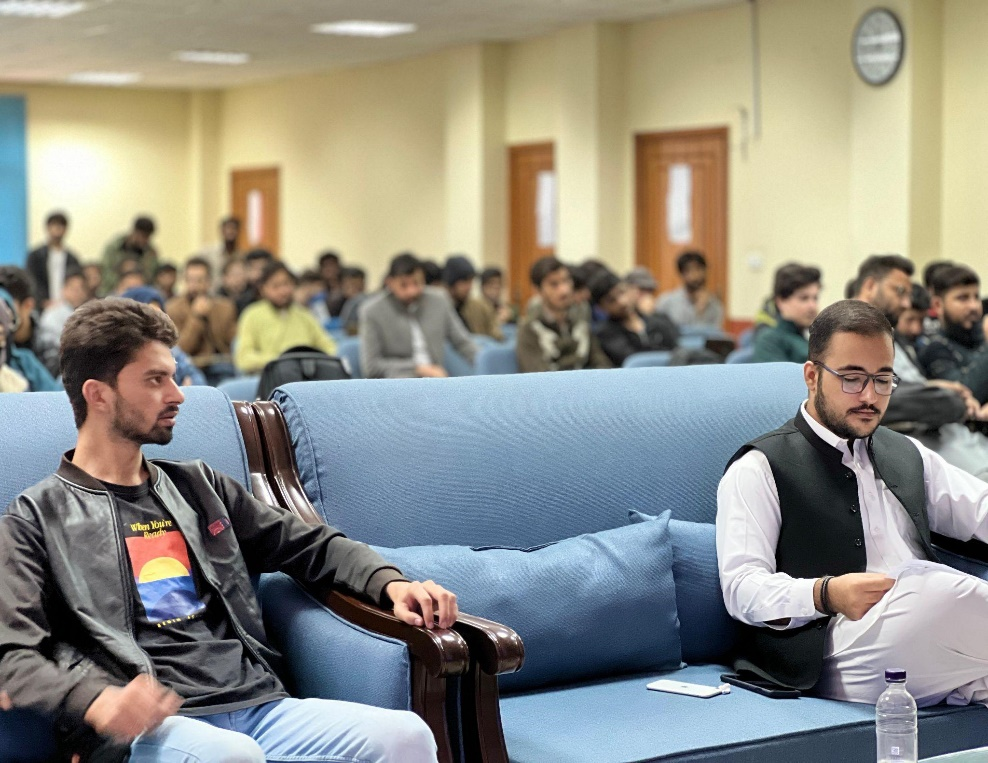

FAST NUCES Peshawar student branch
IEEE NUCES PWR Student Branch
A student-led engineering community that turns technical curiosity into workshops, competitions, research conversations, and service for the campus.
Canonical branch website
One public home for the branch, built for students to maintain.
IEEE NUCES PWR brings together students from computing and engineering programs at FAST NUCES Peshawar. The branch runs technical sessions, member-led teams, competition preparation, and collaboration opportunities with the wider IEEE community.
This website is split into focused pages, so visitors can browse the branch story, leadership, events, courses, contribution process, and contact details without scrolling through one long page.
Read about the branchLeadership
Faculty guidance and student ownership.
Events archive
Recent workshops, competitions, and branch sessions.
Learning tracks
Short, practical paths for technical growth.
These tracks give contributors a clear place to start, teach, or mentor.
Browse all tracksOpen source
Contributors can improve the website without chasing duplicate repos.
The project keeps source code, event data, public pages, and deployment workflow in one repository.
See contribution paths